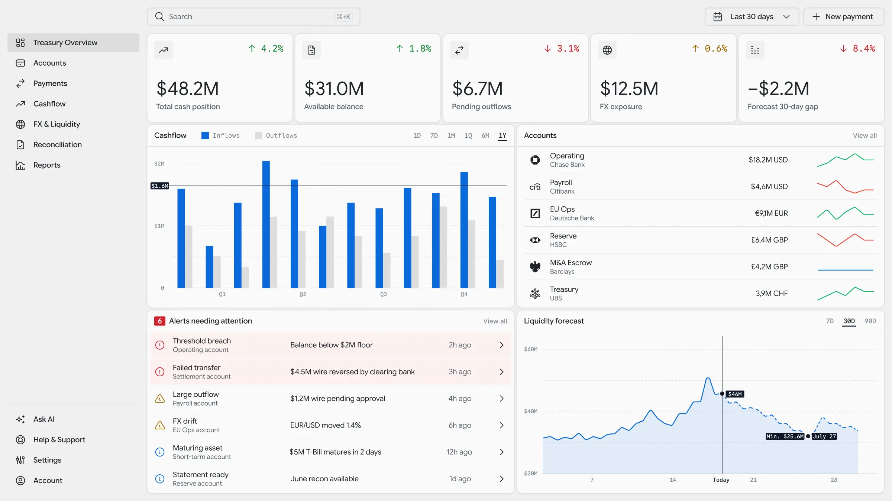
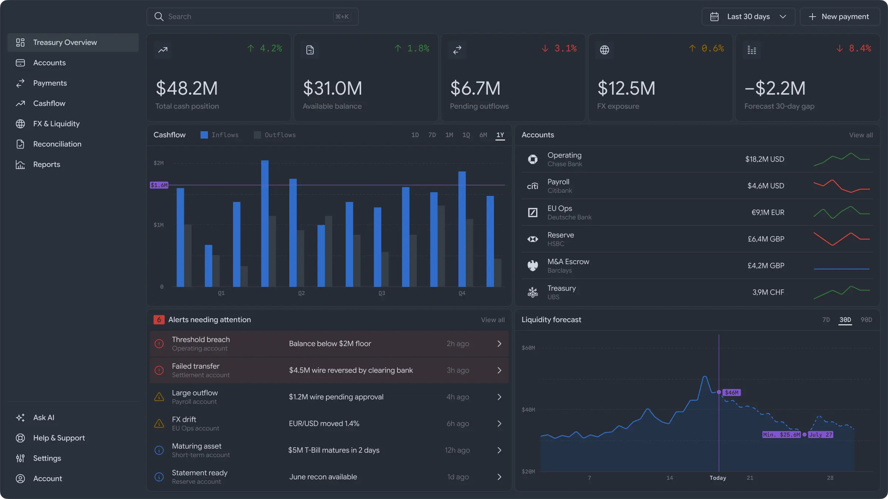

01
Real-time treasury dashboard
A finance team tracked its global cash position in a manual spreadsheet, rebuilt every morning from six disparate bank portals across four currencies.
- The hard part
- Synthesizing dense, multi-currency financial data into a single viewport from zero. We had to cure visual overload so a critical $2M floor breach wouldn't get buried under routine bank statements.
- What we did
- Engineered a comprehensive frontend portal. We anchored five macro-KPIs, built custom dynamic charts separating actual vs. projected liquidity, and implemented a severity-ranked alert system to instantly surface financial risks.
- Outcome
- Transformed treasury operations from reactive monthly audits to a real-time command center, enabling instant remediation of critical breaches while providing clear visibility into 30-day liquidity gaps.